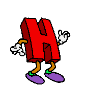

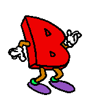
Hello all. I am hab. I own this (very cool) website. Read below for more about me! Hello all. I am hab. I own this (very cool) website. Read below for more about me! Hello all. I am hab. I own this (very cool) website. Read below for more about me! Hello all. I am hab. I own this (very cool) website. Read below for more about me!
Hello all. I am hab. I own this (very cool) website. Read below for more about me! Hello all. I am hab. I own this (very cool) website. Read below for more about me! Hello all. I am hab. I own this (very cool) website. Read below for more about me! Hello all. I am hab. I own this (very cool) website. Read below for more about me!


By the time you're reading this, I've probably already graduated from university with a computer science degree. I'm gonna be one of the many people looking for jobs in this extremely volatile job market (certainly NOT looking forward to this), but I'm doing what I can to improve the mood around here!
Some things that I'm comfortalbe sharing with the internet are that I'm in my early 20s, I'm from California, and I love and adore game design.
Suffice to say, without getting into much detail, I'm disillusioned with the current tech industry. I'm not a fan of the direction it's headed where it seems to favor the pursuit of advancing technology for convenience while stifling creativity.
I'm seeking to make meaningful changes in the smaller communities I am involved in rather than trying to make a big difference in the world. I figure it pays off more to see the changes I make in people's lives, and supporting smaller communities is a good way to see that firsthand.
I play games, and on occasion make games. For more info on that, scroll to the bottom of this page and click on my itch.io link! My most fruitful venture right now is a custom level I'm creating using an ULTRAKILL custom editor called Rude Level Editor, a proprietary offshoot of the official Tundra Level Editor. Here are some pictures if you're curious (taken from the Unity Editor):
I'm theming it around an airport design. I'm taking inspiration from the new Fraud layer, which uses non-Euclidean geometry, camera and gravity trickery to make you think you're working with an impossible space. It's really cool! I implore you to check out the base game if you can.
Hi. I made this because it would probably be more convenient to include a section showing off what I'm good at for jobs. If you are seeing this, you probably saw my resume (and CV if you requested it) already. So I won't be rehashing it here.
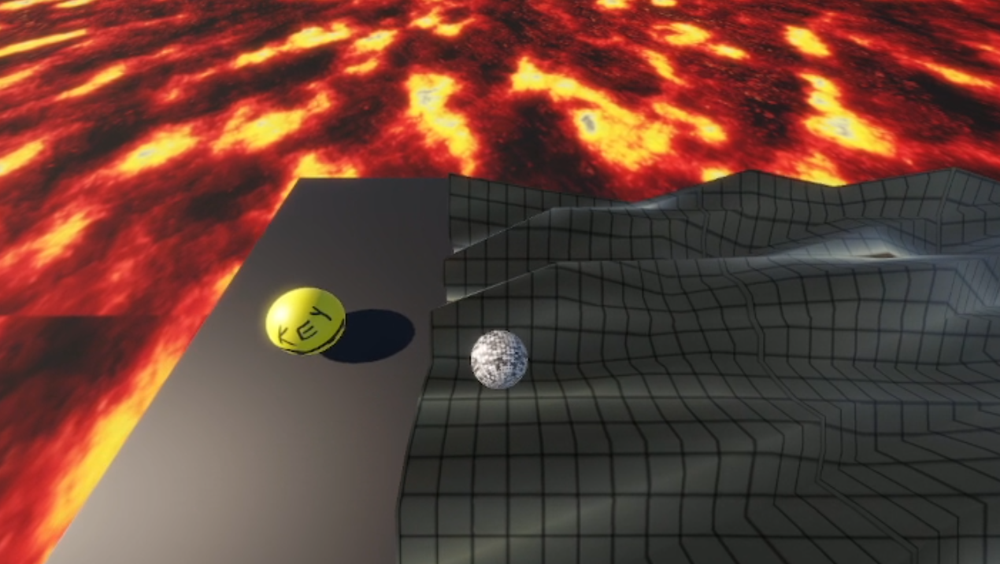
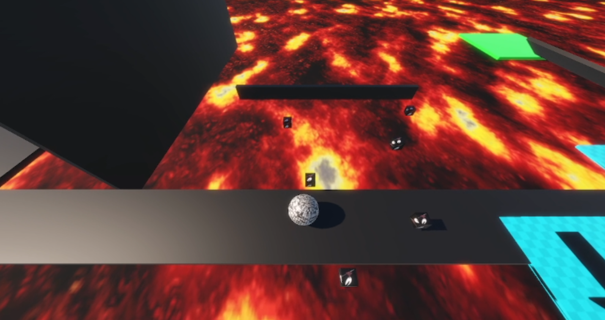
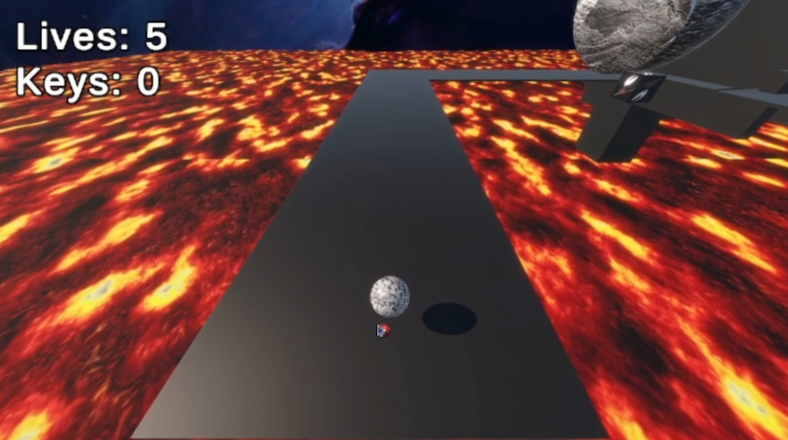
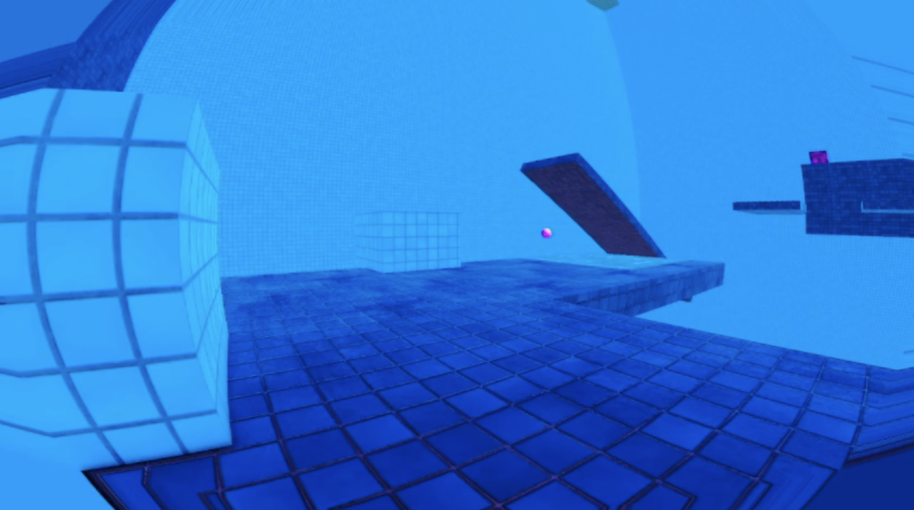
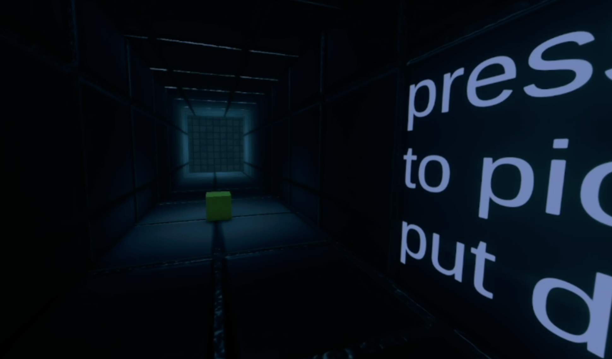
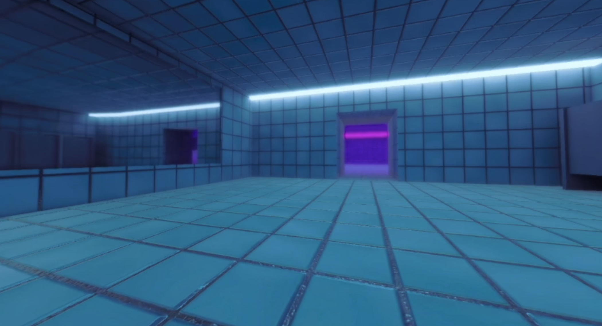
Reflection of a Dream is a game that I made for the same class. This time, I had to collaborate with a team. Together we managed to create a world-swap platformer.
In essence, we have a "Dream" world and a "Nightmare" world. The two environments use the same geometry with changes in player hazards, platforms, and whatnot.
The thing I am most proud to show off is the serialization algorithm that I wrote for the game. Serialization is just a fancy word for "saving and loading".
Here I also learned: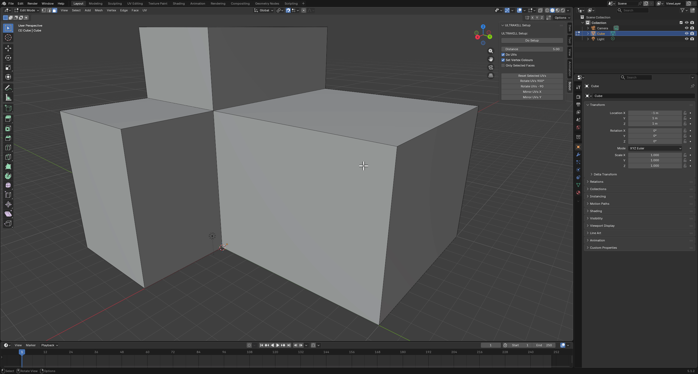
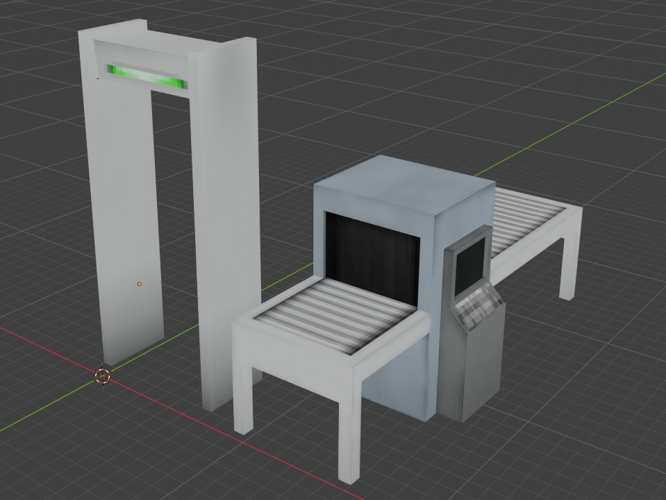
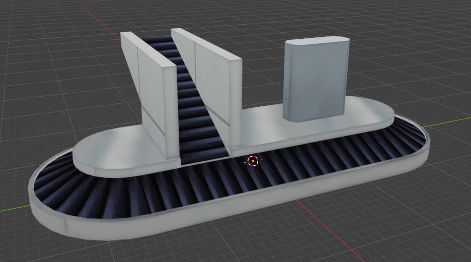
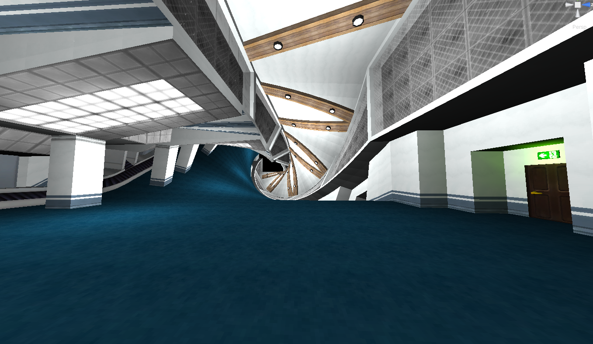
I always preferred the look of old early 2000s websites. It's what I grew up with, and I feel like it's a lost art that's going away the further we get. It's probably idiotic to stick to something traditional like this when there's so much more to be learned with new technological advancements in rendering, website design, UI design, and whatnot. But I feel like there's something good about a website where you just have to scroll and read to find out all the information I have to present. Also there's just something really charming about working on something that many would be consider to be ugly. It's kind of like my beloved ugly little creature. My mad scientist concoction.
Just one simple website! That's all I really need to show you what I'm about.
| GitHub | https://github.com/hab927 |
|---|---|
| Itch.io | https://hotairballooon.itch.io/ |
| YouTube | https://www.youtube.com/@habibble |
| BlueSky | https://bsky.app/profile/habb.bsky.social (I don't use this a lot!...no posts yet) |